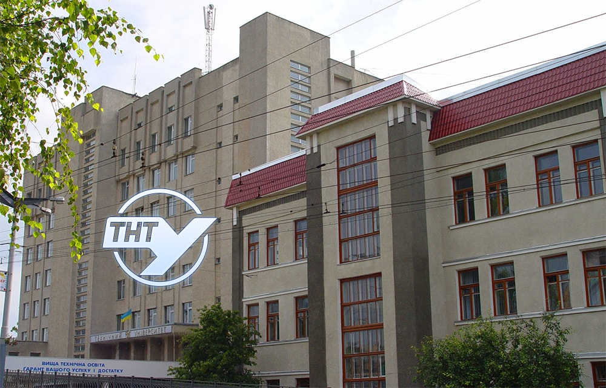

Цікаве

Скільки років ТНТУ
Історія університету нерозривно пов’язана з історією Тернополя. З 60-х років минулого століття розвиток
міста відбувався за рахунок будівництва значної кількості промислових підприємств, у т.ч. промислових
гігантів — Тернопільського комбайнового заводу, ВО «Ватра» (на базі заводу «Електроарматура»), пізніше –
заводів «Сатурн» і «Оріон». Десятки підприємств потребували кваліфікованих інженерних кадрів. На базі
Львівського політехнічного інституту 11 листопада 1960 року для забезпечення цієї потреби було
організовано Тернопільський загальнотехнічний факультет з вечірньою та заочною формами навчання.

Моя спеціальність
Освітньо-професійна програма «Інженерія програмного забезпечення» охоплює всі аспекти розробки
програмного забезпечення від початкових стадій створення специфікації до підтримки системи після здачі в
експлуатацію. В процесі навчання вивчаються мови програмування та технології розробки віконних і
мобільних додатків, веб-сайтів, загальна теорія проєктування, конструювання та моделювання програмного
забезпечення, управління проєктами з розробки програмних систем, принципи та підходи до тестування
програмних продуктів тощо.

Як ефективно вчитись під час дистанційного навчання
Якщо спочатку навчання за допомогою онлайн платформ здавалось складним та незрозумілим, то зараз до нього
майже усі звикли. А вчитись із дому стало частиною буденного життя. Для того аби дистанційне навчання
було ефективним, потрібно відвідувати лекції та уважно слухати викладача. А також – вести конспекти,
робити скріншоти або записи екрану. Потім це все можна повторити самостійно. Для ефективного
дистанційного навчання також варто скласти для себе графік навчання, адже без нього буде складно. А якщо
за ним слідувати, то організм звикає і потім буде легше і все працюватиме «на автоматі». Також не варто
не відкладати нічого на останній момент.
Чим займаються програмісти
Програмістами узагальнено називають категорію людей, що займаються розробкою алгоритмів та програм на
основі математичних моделей. Програмістів умовно можна розділити на три категорії: прикладні, системні
та веб-програмісти. Програміст повинен мати терпіння та витримку. Це абсолютно незамінні якості в його
роботі. Програмування — галузь яка бурхливо розвивається, тому потрібно вміти швидко адаптуватися і
постійно вивчати щось нове. Інакше через кілька років ваша цінність як фахівця може помітно знизитися.
Вміння об'єктивно оцінювати можливості технологій та їх використання в кожному конкретному випадку.